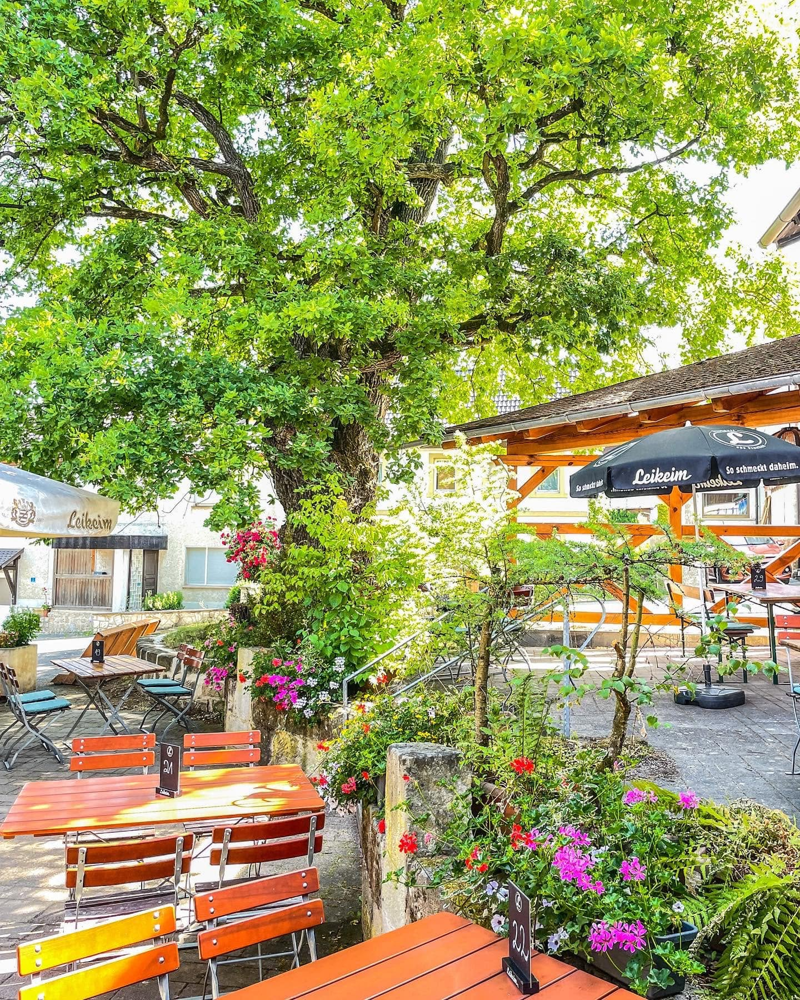
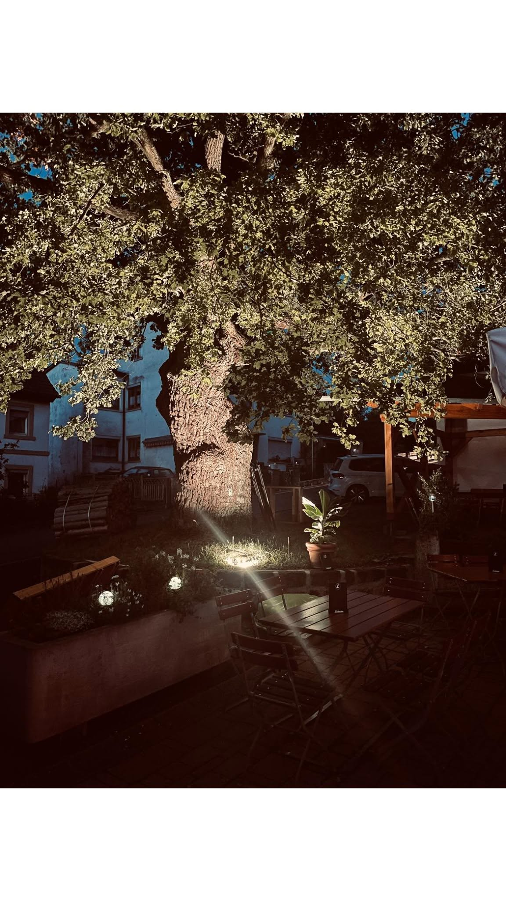
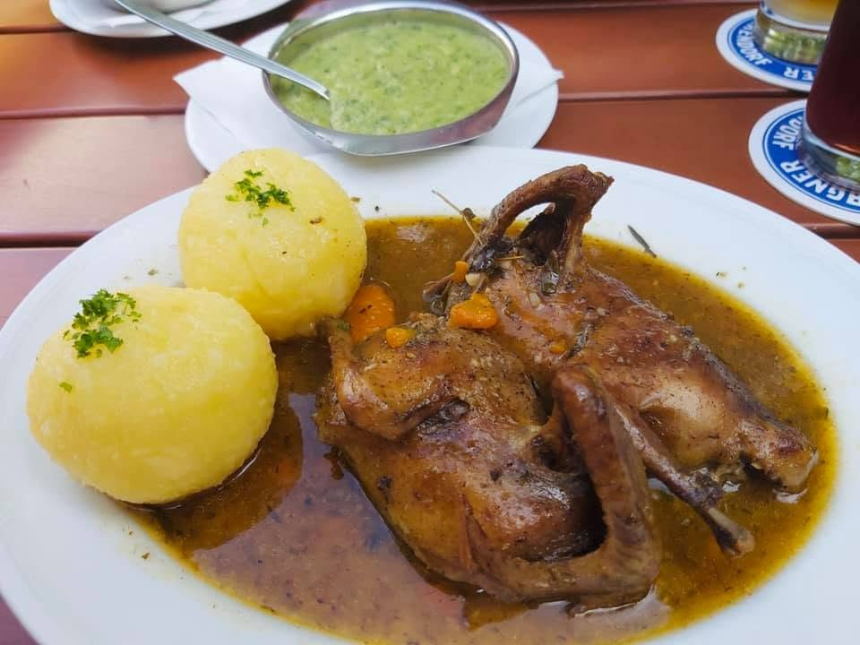

Unnera Subbm
Suppen
- Leberknödelsuppe 4,80 €
- Gulaschsuppe 5,80 €
Betriebsurlaub 24.8. – 10.9. geschlossen ab Fr, 11.9. wieder für Sie da

Fränkisches Wirtshaus
Fränkische Spezialitäten, Leikeim vom Fass und ein Biergarten, in dem man im Sommer sitzt, bis es dunkel wird.
Fr – Mo
Fr, Sa, Mo ab 16:00 – 21:00 Uhr
So ab 11:00 – 21:00 Uhr
Di, Mi, Do Ruhetag
Am liebsten telefonisch — dann wissen wir gleich, wie viele Sie sind und ob es draußen sein soll.
Burg 2
96272 Hochstadt am Main-Obersdorf
Parkplätze direkt am Haus.
Nur bar
Wir nehmen keine Karten — bitte Bargeld mitbringen.
Das Haus
Die alte Eiche steht mitten im Hof. Die Tische verteilen sich auf zwei Ebenen darum herum — unten die Terrasse, oben unter der Pergola. Abends wird der Stamm von unten angestrahlt, und niemand geht mehr freiwillig rein.
Drinnen ist Platz für Gesellschaften, draußen für alle anderen. An guten Abenden bringt jemand ein Akkordeon mit, und aus zwei Tischen wird eine Tafel.

Speisekarte
So stehen sie auf der Karte im Haus — und so lassen wir sie auch hier stehen. Dazu Leikeim vom Fass.
Unnera Subbm
Unnera Glassigä
Unnera Glassigä
A weng an Fiesch
Fürn glann Hunger
Zum Schluss
Dei nägsta Feier bei uns
Sprich uns an und wir planen Deine Feier: Sektempfang, Buffet oder à la carte, Vorspeisen und Desserts — bis zu 100 Personen.
AnfragenUnd jetzt?
Sonntags und an Feiertagen ist es schnell voll. Ein Anruf reicht.
09574 653482
Wir kochen frisch. Bei vollem Haus dauert es deshalb manchmal etwas länger — das ist Absicht.
Informationen zu Allergenen und Zusatzstoffen erhältst Du bei unserem Servicepersonal.
Wir nehmen nur Bargeld.
Tisch reservieren4,5 von 5
aus 235 Google-Rezensionen
Was Gäste sagen
Das ist der Satz, der in den Rezensionen am häufigsten in Abwandlungen vorkommt. Daneben immer wieder: der Biergarten, die Portionen, die schnelle und freundliche Bedienung — und dass man zu Stoßzeiten etwas Geduld mitbringen sollte.
Rezensionen bei Google lesenBilder
Kontakt
Reservierungen am liebsten telefonisch — dann wissen wir gleich, wie viele Sie sind und ob es draußen unter der Eiche sein soll.
24.8. – 10.9. Betriebsurlaub. Ab Freitag, 11. September gelten wieder die Zeiten unten.
Die Karte kommt von Google. Beim Laden wird Ihre IP-Adresse an Google übertragen.
Lieber nicht? Direkt in Google Maps öffnen